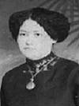

fiche familiale
*******************************************************************************
|   |
Marie-Dolora Barriault Dite "Mary". décède à l'âge de 31 ans. Naissance le 25 mars 1895 à Scotstown, cté de Compton. Baptême le 25 mars 1895 à St-Paul de Scotstown. Enregistrée sous Marie, Dolora Baurreault au registre des baptêmes, de l'église St-Paul. Parrain Raymond Bourget, marraine Marie Bourreault (Barriault). Marraine de Conrad Rivest. Décès le 3 janvier 1927 à Laverlochère, cté Témiscamingue. Père: Honoré Barriault Mère: Anna Bourget (sa famille) Mariage le 14 avril 1912 à St-Isidore de Laverlochère Conjoint: Armand-Maxime Bougie décède à l'âge de 92 ans. Naissance le 20 avr 1882 à St-Lin-des-Laurentides cté L'Assomption Décès le 19 mai 1974 à Maison Pie XII de Rouyn-Noranda Parrain de Conrad Rivest. Père: Delphis-Maxime Bougie Mère: Célina Chaussé (sa famille) |
Enfant 1 Armandine Bougie
Dite "Mandine".
décède à l'âge de 92 ans.
Naissance: 27 jan 1914 à Laverlochère, cté Témiscamingue
Décès: 3 fév 2006 à Rouyn-Noranda, cté Témiscamingue
Funérailles: 7 fév 2006 à Immaculée-Conception de Rouyn-Noranda
Sépulture: au cimetière St-Michel de Rouyn-Noranda
Mariage le 17 jul 1935 à St-Isidore de Laverlochère
Conjoint: Albert J. Morin
décède à l'âge de 74 ans.
n. 24 avril 1912 d. 31 oct 1986
Père: Joseph Morin
Mère: Florida Bernier
Enfant 1 Huguette Morin
décède à l'âge de 73 ans.
Conjoint: Gaston Bernier
décède à l'âge de 58 ans.
Enfant 2 Claudette Morin
Conjoint: Jérome McGuire
Enfant 3 Liette Morin
Conjoint: Paul Authier
Enfant 4 Daniel Morin
Conjointe: Jacynthe Dumont
-------------------------------------------------------------------------------
Enfant 2 Albert Bougie
Dit "Ti-Bert".
décède à l'âge de 88 ans.
Naissance: 18 jan 1916 à Laverlochère, cté Témiscamingue
Décès: 18 mars 2004 à Ville-Marie, cté Témiscamingue
Funérailles: 20 mars 2004 à St-Isidore de Laverlochère
Sépulture: au cimetière de Latulipe
Mariage à Latulipe.
Conjointe: Juliette Gingras
n. 31 déc 1919 d. 21 sep 1991
Veuve de: Arthur Roy
Père: Charles Gingras
Mère: Florence Brassard
-------------------------------------------------------------------------------
Enfant 3 Alphonse Bougie
décède à l'âge de 89 ans
Naissance: 17 jul 1917 à Laverlochère, cté Témiscamingue
Décès: 6 mars 2007 à Laverlochère, cté Témiscamingue
Funérailles: 10 mars 1906 à St-Isidore de Laverlochère
Sépulture: au cimetière de Laverlochère
Mariage le 5 jul 1952 à St-Eugène-de-Guigues, cté Témiscamingue
Conjointe: Rose-Hélène Comtois
n. 6 déc 1935
Père: Henri Comtois
Mère: Alice Comtois
Enfant 1 Claude Bougie
Conjointe: Jacynthe Hubert
Conjointe: Nicole Desrochers
Enfant 2 Denis Bougie
Conjointe: Francine Caron
Enfant 3 Louiselle Bougie
Conjoint: Mario Boucher
Conjoint: Jean Richard
Enfant 4 Gaétan Bougie
Conjointe: Guylaine Royer
Enfant 5 Jean-Guy Bougie
Conjointe: Huguette Gilbert
Enfant 6 Gaston Bougie
Conjointe: Line Bélanger
Enfant 7 Guylène Bougie
Conjoint: Richard Dénommé
Enfant 8 Lucille Bougie
Conjoint: Réjean Lefebvre
Enfant 9 Sylvie Bougie
Conjoint: Richard Provencher
Enfant 10 Sylvain Bougie
Conjointe: Caroline Gauthier
Enfant 11 Charlène Bougie
Conjoint: Martin Labelle
Enfant 12 Cathy Bougie
Conjoint: Stéphane Chouinard
-------------------------------------------------------------------------------
Enfant 4 Henri Bougie
décède vers l'âge de 2 ans
Naissance: vers 1918
Décès: vers 1920
-------------------------------------------------------------------------------